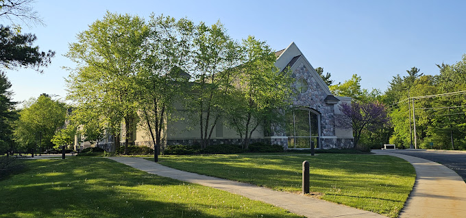
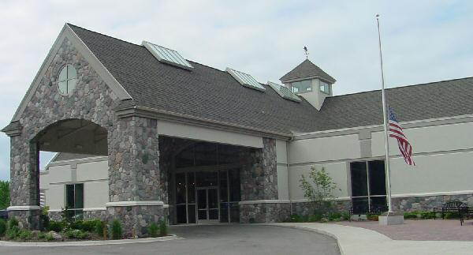

Historical Places


Bay County Historical Society
321 Washington Ave, Bay City, MI 48708
Hours: 10am - 4pm, Tuesday - Friday
Bay County Historical Society


Cass River Bridge
Cass River Park Trail, Saginaw, MI 48601


Herbert D. Doan Midland County History Center
3417 W Main St, Midland, MI 48640
Hours: 8:30am - 5pm, Monday - Friday
8:30am - 3pm, Saturday
Midland County Historical Center

Alden B. Dow Home & Studio
315 Post St, Midland, MI 48640
Hours: 8am - 5pm, Monday - Friday
11am - 12:30pm, Saturday
Area: 27 acres
Alden B. Dow Home & Studio